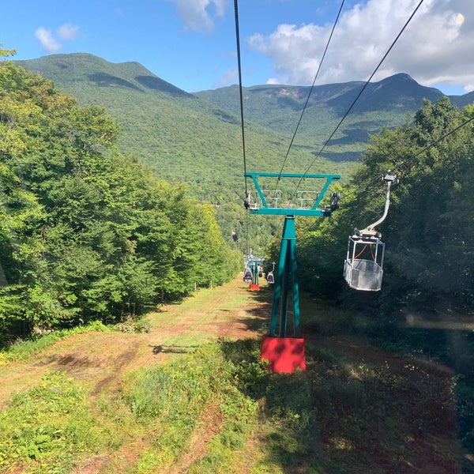

Rajgir is a place that is full of Spirituality and beautiful scenery of Buddhism and Jainism. The place is set in a green valley and covered by rocky hills. You can visit Venuvana, Japanese stupa, Vulture peak or Griddhakuta, Rajgir Ropeway, Makhdum Kund, and Bimbisaras jail. Many archeological sites belong to Buddhism and Jainism. Japanese stupa is a sign of World peace by the Japanese. It is located on the top of Gridhakuta hill at a height of 400 m.
